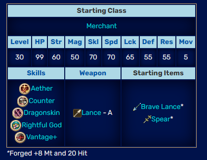
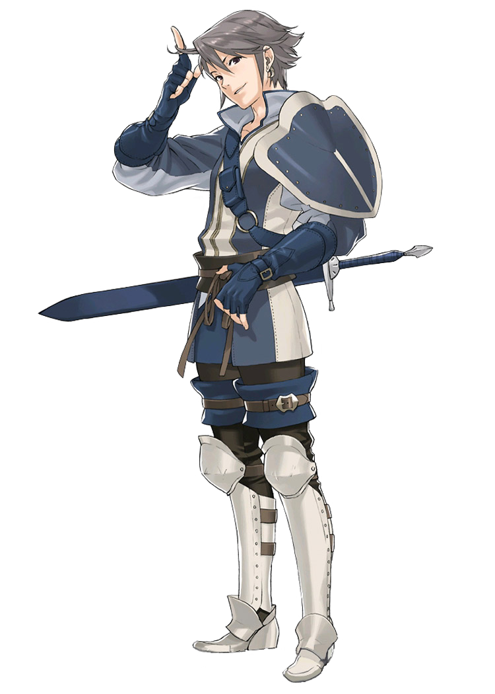
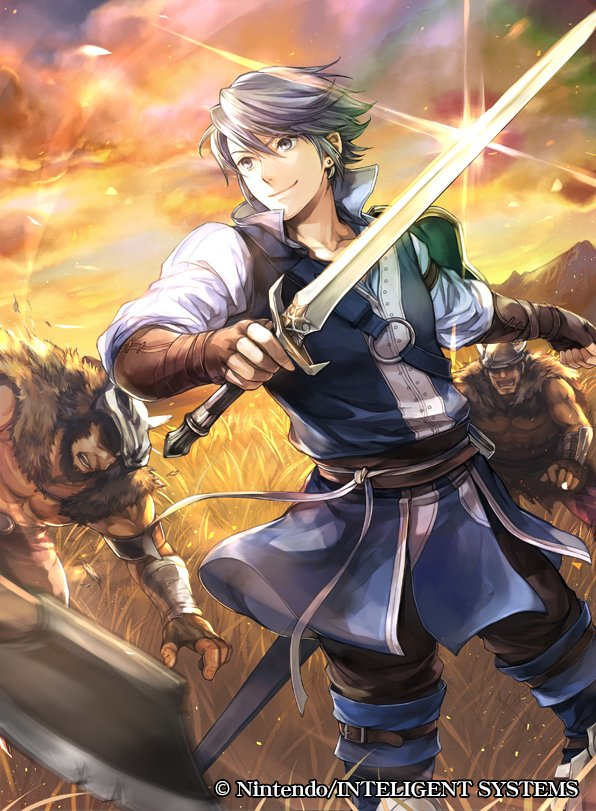

- CONGRATULATIONS -
"HOLY SHIT", i mean from the bottom of my heart because got damn that is a lot of gaming.
i will respond to the post as i read it as always but i did skip randomly through it and it seems like you have played more fire emblem in less than half a year than i have in my entire life.
you may notice that you are not reading this on the lunatic red forums and instead on aeon-n.cool, my awesome new site. i mostly just do not want to have to struggle with the image upload limit and that bug that puts a bunch of line breaks in posts that have any embeds. also the thread is getting. substantially large.
alright lets go
started on 1/7/13 at the same time? musta been
jarring
but also incredibly well-rounded and will prepare you for every other game in the series
surprised you were not a fan of awakening's appearance since i consider the 3ds games to look the best by far outta any of the series
the fidelity of sprites on the map that will immediately tell you what youre looking at with the variety of the 3d maps makin things look more than just like [castle tileset], [plains tileset], [desert tileset]
although i will admit the 3d models of the fighters are not always the best
fire emblem seven:
its cool. i never beat it
i really like the feel of the gba games but they have never seemed interesting enough to be worth enduring an entire game for since the only mechanic that really spices things up is rescue (i dont like rescue very much). most other games have some crazy things like pair up or battalions or [[[thracia]]] and i never really got in on the story much
seein that valkyrie and
>bolting
hilarious and classic!
i was also underprepared for seige tomes since awakening (my first game) has like two total
and perhaps because of that i have never been a fan.
cheesy on both player and enemy side
three and a half hours on one attempt! on god!
yeah thats part of why i dont like the gba games. they look so tiny but they can be a slooog dude
ill give three and a half hours to one map only (i will get to it later)
cool final team! i am taking notes.
all video game tutorials suck after knowing how to play except like
ones that you can sequence break
my condolences. they always have them starting at the gba games
awesome secret: the tutorial chapters of three houses are more difficult than any other because you don't have rewind yet
glad ya liked it. no more training wheels though huh straight to the og
although ya liked it! cool i guess
most of my info is from hearsay and half is from tsun so i can't comment too much with stuff other than "cant see unit ranges! stupid!" and "no skills! lame!"
it mostly just looks annoying to play due to not having accumulated a couple decades of quality of life features
"sheeda" huh i guess nobody uses the official names around here
i might not have any place to speak but cmon
caeda is way cooler
massive fan of the jagen quote there
anway its awakening time! i know that one
HE DOESNT LIKE IT !

i got a lot ta say but ill just get it in order:
the cast:
so:
the only fire emblem game i have played with a decent cast all the way around that isnt silent the entire ass time is tellius and awakening is not an exception. yes a bunch of them are very annoying and they say one thing a bunch. BUT there are some awesome ones and we got lowest lows highest highs in awakening. massive fan of owain, laslow, libra, robin (i am not trolling!), bastillo or whatever his name is, and some others
lunatic plus huh! big party. awakening has a bit of a difficulty problem
the problem: the start of the game is hard (or easy on things that arent lunatic) and then you unlock map battles
and map battles tear every single fire emblem game that they exist in in half, nothing else to say
everything goes out the window after that first risen fight
awakening has a special case i will get to later but for any% that is true. just gotta be responsible i guess (bad design)
i like your robin. normal girl. did you know its suboptimal to be a girl because men have children and robinsexuals and whatever whatever and also shes more annoying in some supports
i do not remember any same turn reinforcements even showing up in awakening so i musta got lucky. 99% sure they dont exist in fates. my condolences they are never acceptable
henry is simply cracked thats all there is to it
the prank weapons: awesome stuff. awakening and fates have massive weapon variety and you almost never have to use iron steel gold (boring). realized how awesome that was after playing three houses which has a total of two different weapons in the entire game and silver sword+ gets everything done
ya beat the game congrats
so im gonna tell ya somethin right
awakening was not made for awakening. its all a big prank. the game gives you a billion regailia weapons for free. infinite exp grinding is allowed. dlc at any time. a massive cast. skill inheritance. its simply busted.
but. as i have told tsun before.
it exists for one map.
apotheosis, the final dlc map, is BUSSIN MY GUY
as far as i am concerned the only real goal of awakening is beating apotheosis and its secret route because ON GOD it is the best single fire emblem map
its the only final map that has ever made me actually use everything ive gotten throughout the run. no ingenuity or preperation wasted. you bring your most insanely busted units and every single enemy is stronger than any one of your units. there is nothing like it.
its hard to really describe how cool it is to have an insanely overpowered team and fight something stronger than you in the busted ass game that is awakening. this is the final boss:

she is surrounded by good friends and you have a turn limit (like five or something) to get over to her and beat her
tsun has often iterated to me that the design philosophy behind kaga's fire emblems and their implementation of permadeath (lmao) was to have each player be able to tell their own story through gameplay that isn't forced on them by the game and is unique
and i think this is a perfect culmination of that. by this point, every single unit is gonna be so customized their battlescars are told in their crit rate and their personality is on their sleeve in the form of skills. shits insane. cant even describe.
fire emblem fates: the awesome one
theres one thing youve gotta realize about the route picking my friend
most people do not even have the six chapters. us two, we have the special edition whatever but you get this legitimately you pick your route at gamestop
not terribly an informed decision! i think the intended choice is between selecting the good guys (hoshido) to want to win the war or thinking that you can redeem nohr because while the government sucks the people dont. this is a very interesting decision because iryuhfgnbsdkfjhsdifhujsdklfjklj and the internal affairs and individual stances on the war in nohr are more explored in the side manga starring leo called crown of nibelung of which i have the second volume. the art is great and an interpretation of corrin that isn't the protagonist is much more interesting and sidrfughjnsdglhusjdfnsikldghyufnj and there's a mod called "good guy garon" that rewrites all of the cutscenes in conquest to better represent nohr as a struggling nation and more justifies the war in that hoshido is blind to the geographical barrenness of nohr and considers them in the way that [[the vast majority of fire emblem fates the video game]] represents them as, an aggressive nation with cruel administrators.
anyway the first six chapters are all varying levels of tutorial but they also give you a taste of what each route has and what you lose, mechanically, by picking one or the other.
just kidding, you can access a shitload of nohrian stuff in birthright.
in conquest its a bit more of a hassle to get your hands on hoshidan classes aside from like
ninja
very strong lookin corrin there. the manliness of his appearance belies his internal weakwilledness (im not talking about you i just mean the guy)
did you know its suboptimal to be a boy because women have children and corrinsexuals and whatever whatever and jakob and also i think the female sprites look cooler
too bad she has the stupid ass
thigh hole
anyway whatever you made it to chapter ten congrats
i would not call it the best chapter in the series (apotheosis) or even the best chapter in conquest but its pretty cool, very sprawling.
i am a big fan of almost all of the conquest chapters, especially the later ones people think are stupid
my guy used all available resources! congrats, it doesnt happen nearly often enough. i hate ending a game with a ton of uses left on regalia just because the game never forced my hand. conquest does that a lot and if you were still playing it i would say to be careful with your rescues but too late
and then you start the lategame conquest party. tons of fun. last time i played conquest (lunatic, like two years ago)
wait
i interrupt that sentence to say go d DAMN i havent beaten a good fire emblem game in at least two years. crimson rose and azure moon do not count. i should like. boot up tellius again huh
anyway last time i played conquest i was takin it real slow you know ruminating on every single map (i do not (and couldnt really afford to) let units die) and playing intermittently i was getting like one chapter done every week or two
i think this is a good thing since they are very tightly woven puzzle battles! very intricate and high quality
no idea how you got so many assholes on the eternal staircase, i woulda gotten nuked way before that many spawned
insane how people can tell voice actors just by hearing them but thats fouckin slick i feel bad they gave a metal gear solid guy to >male corrin but right on
all i know is that ryoma has the same voice actor as ((formerly the hero known as)) mcree from overwatch
chapter 23 has trolled me in both of my runs the exact same way
five years ago or something i get to takumi and i will kill him but ho ho he has a seven percent crit! i will be fine even if it procs though im careful
>vengeance
such a shame! it would be awful if the exact same thing happened three years later in a lunatic run
:[
cool map though
holy shit dude
how do you take an EIGHT UNIT LOSS
i said i dont let anyone die right but i know i can take one or two without softlocking myself
but eight??? dead run right???
i forget what difficulty you said you were on but im assuming hard since you did awakening on hard
yeah dlc dosent give xp or gold unless you play the EXP OR GOLD MAPS??? stupid. i didnt use em
as long as you dont 1cheese by selling stuff id say the vast majority of dlc is pretty fair to play a few times in any run though, a lot of the stuff is like side-grades and some of it is a TRAP like the grandmaster class. "Ah yes Grandmaster from Fire Emblem: Awakening! A spectacular class that excels at everything I will make my swordmaster into a Grandmaster." no. you do that and you die. every time i have had anyone be a grandmaster in fates they have shitted their balls off, mostly in speed and str. (rally spectrum is really good but leave the class asap after that)
i have many stories about conquest chapter twenty five! incredibly funny one
anyway YEAH dude you are softlocked on chapter 27
conquest endgame not saving i would have been more annoyed with if i didnt have an almost guaranteed one turn strat for every time i wanted to try
and the final boss is awesome. i hate boring dragon bosses. now you're playin birthright? i hate boring dragon bosses
surprised at you sayin the difficulty for birthright is simlar to conquest
i recently tried playing birthright again in lunatic and i simply stopped at chapter like 21 because i asked for lunatic and it was not giving it to me
big fan of the cool hoshidan stuff like clubs/naginata/katana and all the classes and whatever but birthright kinda dumps!
very sorry about the shining bow thing
you can always get it in revelation! and everything and everyone else so low chance you even use sakura but
hana is funny
she is a rare child soldier unit that actually feels like a child soldier (incapable)
these fouckin governments dude "yeah your permanent bodyguard can be your best friend" like what the hell thats gotta mess them both up and is incredibly unsafe. not as bad as peri though
hope ya had fun with her
KAZE BIRTHRIGHT
thats part of the reason i stopped my birthright run (i do not let anyone die)
i clear this chapter and see that someone died okay i know he didnt die the first time i played this game how do i stop it
>a support
i dont talk to that bitch hes annoying!!
so i go to dlc maps to crank up supports and i get all this stupid exp that unevens my team and eventually i can keep this dumbass alive (i needed him alive because i wanted him to marry mozu and then get mozu to get replicate and give me a midori with replicate (and then i learned that replicate was mechanist at lv 15 instead of lv 5 so i gave up after saving him (and then i stopped playing)))
lilith is stupid lmao! her personal staff is funny though i put it on a hacked unit
nohr being barren lands and being economically shitted is yeah not really mentioned in the game (see supports for all actual info, chapter cutscenes tell you nothing) but it makes it a lot more interesting! ho ho
final boss blows easily oneturnable congrats
i continue to be the only person to think conquest >= chapter 20 is based as hell. damn.
i vastly like the varied supports and while some of them are annoying you can simply skip em
of course i also almost exclusively use units i like as characters even if it means not having full deployment or using fart shitters like ophelia so not much of a problem for me
i honestly forgot what i said about revelation and to be honest maybe i oughta take your opinion for it because unlike conquest and birthright i have not played it since my orignial runs of the game which were just a bit after release date
watamote is funny...........
oh my god you made a video
yeah it uh
its a bit much. so happy they fixed it in the game after this by having literally like ten recruitable units the entire game!!!
either extreme kinda sucks
i dont even have much to say so i will just defer to you for the rest
fire emblem fates total review: wasted potential? yes
coulda done a lot more with the world, i just think that even in this kinda incomplete state it is vastly more interesting than the usual fire emblem game that plays it safe and does [[vaguely european mideval fantasy land]] especially with the much more varied development of architecture and cultures and all the small territories and srigyfhunjsdifyghujzxnfsidhujkfnsdifhuknj and i hate [[country that is defined by the class they use the most]] and [[evil country vs good country]] which IS KINDA whats goin on here BUT nohr has a lot more internal going on and things planned out and ties with the rest of the world and cool things and sdirfgyhunjsdfigyhuks njmdfdyisfhnjsd than the usual shitmodes (i like tellius)
also not a big fan of games without skills! and fates does em best
just feels plain. im not askin for everybody to have galeforce armsthrift aether astra spd+2 but you lose some individuality in all archers arching the exact same
hey man
have you heada the uh
hidden truths shit?
BUSSIN my guy BUSSIN
the OTHER half of the reason i didnt finish birthright is that as far as IM concerned the protagonists SHOULD HAVE BEEN THOSE GUYS BRO ON GOD ON GOD
inigo is the best character in all of fire emblem! cope about it. his daughter is great, owain is great, severa is

and they had a much more awesome perspective than corrin or whoever! if the game was a single route that was the perspective of them in nohr that was a good guy garon edition of conquest that really had em go around the world and do shit since they are the ONLY dudes with any lIEGITIMATE connection to valla as far as im concerned and they could sneak away to do secret missions and then he gets caught by xander and hes like "laslow Why where you sneaking out and investigating massive hole in the ground and talking to rainbow sage !?" and he says "NO BITCHES ?" and then sedrufvtygbhsnjfuisgyhdnjfsdgyifhj and then i make a fire emblem engine in gamemaker and a bunch of documents about rebalancing and skills and classes and a couple dozen kb on the story and read all of the secret manga for fates and the 4koma and watch their awakening supports and ydcrfvgbhjnuftgbyhnj
the game does not have any of that!
but i dont even really see the space for something that cool in most of fire emblem
so i like fates
ill check out your castles later so i can take notes on your teams
thats enough of that.
now ive watched choopi choosi (worlds best fire emblem tuber) and he talks fairly highly of genealogy
started playing at the same time as tsun and stopped at chapter four.
ill just drop my review here so you know what kinda chump i am since i cant really comment on the later two thirds of the game
umm environments are all the same tileset, offensive skills are broken as hell and can only be on sword units, i like the concept of fewer skills but they are stronger but i dont think it works well here, the dominant strategy for the entire game is sigurd (seliph) + trees to dodgetank everything and thats stupid, the game punished me thinking in advance and preparing my troops ahead of time almost every time i tried, the maps are "big" and "open" but are actually very linear since you have to do objectives in order, i like a lot of the concepts like the castle stuff and the 1:1 geographical representation of the world in maps, and death doesnt matter since we save every turn and there is infinite use revive staff since all you have to do is fix it at a shop. talks are cool. second generation you can guess how i feel about that (they are cool)
im sure youve talked about this one enough with tsun down the line in the posts here but i read your whole experience, well done
holy blood is funny
thats what i got
you should send me pictures of your entire team so i can take notes
FIRE EMBLEM SIX
i always thought it was a less cool version of fire emblem seven when i played so maybe im a dumbass
i didnt get as far in it as i did in fe7
thany. thannie? shanii. thanye. i dont know. funny kid. never change, pegasus knights. (they change in fates when men can become pegasus knights. gender equality (fates introduces like four gender-locked classes))
i dont have much to say here again which may happen more and more until i get to the part where you play three houses or tellius but cool run !
i might talk some shit about gba but never sleep on the battle animations that shits awesome. i am a big fan of the 3ds battle animations and tellius to an exteeeeent but if you replaced all of it with the pixelstyle of gba i would not really mind
genealogy is also kinda neat but not as neat as seeing lon'qu hit that jump attack spinny crit
damn you write down everything about im sorry i have little to say
very glad ya found one you like whenever i tell anyone about fire emblem (not that i am the sole reason you played but i did make a big fire emblem post) i get concerned that they will play a 40 hour game and say i hate anime chess
HOMIE WHERE ARE YOU GETTING THAT MOV ON ROY
i musta MISSED something
judgral cries itself to sleep god damn
other opinions i have:
- zephiel is built. big hunk
- reverse tipper is pretty neat actually
- but he sucks to play in melee
part of the reason i have not given fe6 a good shot is because i saw the final map and it just looked so easy and dumb its like
if you know its all gonna end up going into that
why even try
ive talked about apotheosis you know
in games that have dlc and stuff to do aside from the map youre on it feels like when you get to the end you have like
a team you can do things with
but if you get to the end of a game that is totally linear the ending really needs to be good or you just have a playable cutscene and all the interesting things you can do with it are just gone
can you believe they only had online battles in one game?
like damn thats so obvious a feature id imagine they start making it with that in mind. i know i would
totally unrelatedly: i am taking notes on your team again
oh wait we are nearing the end
well damn ill cry you put one over everything else!
im jokin thats fine the gba games are solid they just arent my style
and the limited supports make each one more valuable instead of a queue of scenes you can view at your leisure (i like this)
oh heres one thing about the uh
i cant do quotes here so
> if you give supports/social links to plot-relevant characters, then what’s gonna happen when that character undergoes changes in the support/social link? how will it be reflected in the main story?
very true criticism, it is addressed by three houses and maaybe tellius i forget
anyway in three houses certain supports unlock or change story events, and some are locked before certain story events happen.
the latter of which feels kinda limiting but it makes sense
youve never seen such a divided fanbase? my man hasnt looked at sonic the hedgehog! now i will review every single sonic game
it is pretty devicive though
for me though im looking for:
- higher difficulty
- skills
- smaller cast but still within the 20-25 range
- none of that stamina shit from thracia
- all of that pair up shit from fates
but whatever
after a lot (large amount) of past discussion with tsun and good ol choopi i have begun to understood more perspecive's like from the people who like kaga's stuff
lucky you though, gba is popular and all the cool mods are made for it
hey dude you should download midnight sun sit on the title screen for a few seconds. you'll have a massive chortle my guy
WARRIORS I FORGOT
dont even talk to me about that i hate musou games
list of things musou games have wasted years of development for:
- fire emblem
- zelda
- ((basically)) the ONLY REALTIME fate/ games. shoot yourself type moon. have i mentioned how their 21 gigabyte tsukihime remake is console-exclusive jp-exclusive? ill cry
i will do my best to discuss responsibly i am soryr
reclassing i like
in awakening its just another mechanic that tears the game in half but is awesome for apotheosis
in fates they made it a bit more reasonable
i coooould go without it but its like
i use the units i like but maybe the units i like are four mercenaries okay well i dont want four mercenaries but i also do not want to use peri. solution: make them not mercenaries but still play to their strengths
pairup same situation, big fan of when enemies are allowed to use it
rescue is technically good i just get annoyed by it
crummy lords sure i prefer specialized lords
interesting case: corrin is not an all-rounder
yeah you can reclass to anything but you waaanna have that dragonstone which is a very interesting item
and you will always be weak to dragonslaying weapons when basically every other unit can choose to not be
would be funny if they were even MORE specialized (didnt use a sword or something)
rally specrum is a really interesting way to change robin (also a bit busted in awakening)
but chrom is always chrom
i said before but i think 3ds visuals are best in the series, particularly the overworld and for battles i could go either way between that and the gba games. its just got good chunky attacks (so does tellius but they are too slow)
unfortunately three houses loses a lot of chunkiness and you can see classic nintendo refusing to pay for high quality particles which is a lot more apparent in a switch game compared to 3ds
i would say fates (mostly conquest) has the best ost outta
all of nintendo (just barely above kid icarus uprising)
but in general fire emblem is pretty strong so i wont blame ya
light magic is cool and so is dark magic! theres something fates really dropped the ball on, magic. of course this is indicative of the magic societal progression of the contries, nohr not being able to draw on natural elements like magic as much and having more advanced technology than any other country in fire emblem (this DOES exist it IS true its HARD to see) (i am ignoring agartha. i am ignoring agartha.) and hoshido having such extremely nature-based magics to the point of them being spectacle and not nearly as refined as magic in the entire rest of the series due to the fact that they do not need to worry about using magic to survive and live in resplendent paradise
but uh
mechanically
i woulda liked more than just nosferatu
and there could be more magic in general
heirs of fate is just second generation yeah
there is a five map series in fates dlc like that as well
but yes it can kinda bloat the cast, you really just gotta take a few of em per run, in fates at least, because it gets out of hand
prf get really annoying in three houses lmao and in general i just prefer a large variety of weapons like i mentioned before
but who am i to complain when ragnell is in my hands
WOAH
thats it
no its not.
you chumps have made a buncha posts since then
whatever, right. im in class right now lemme just put in the few image embeds i was gonna do and ill post this
